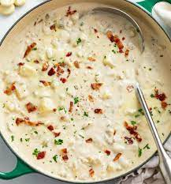

Cham Chowder Recipe

Description
Clam chowder is a creamy and rich soup, cherished for its hearty consistency and savory flavor. Originating from the Northeastern United States, particularly New England, it showcases tender clams and comforting potatoes as its star ingredients. This chowder, often characterized by its milky base, is further enhanced with aromatic vegetables like onions and celery. Optional additions, such as crispy bacon bits, introduce an added depth of flavor and texture. Typically served hot, clam chowder is the epitome of comfort in a bowl, providing warmth on cold days and evoking memories of coastal getaways. Its velvety texture combined with the briny sweetness of clams makes it a beloved dish for both seafood lovers and soup enthusiasts. Often accompanied by oyster crackers or crusty bread, clam chowder stands as a testament to timeless culinary traditions and simple, yet indulgent flavors.
Ingredients
- 2 cups of canned chopped clams in juice or 6-8 pounds of fresh clams, cleaned and steamed open, chopped
- Clam juice (from cans or fresh clams)
- 1 large onion, finely chopped
- 2 celery stalks, diced
- 3-4 potatoes, peeled and diced into 1/2-inch cubes
- 3-4 cloves garlic, minced
- 4 cups clam juice or broth (this can include the juice from canned clams)
- 2 cups heavy cream or half-and-half
- 4 tablespoons unsalted butter
- 1 tablespoon vegetable or olive oil
- 3 tablespoons all-purpose flour
- Salt and freshly ground black pepper, to taste
- A pinch of thyme (optional)
- 1 bay leaf
- 2-3 slices bacon, diced (optional)
- Fresh parsley or chives for garnish
Steps
- Prepare Clams: If using fresh clams, steam them in a pot with a bit of water just until they open. Reserve the juice and chop the clams.
- Render Bacon (Optional): In a large pot over medium heat, cook the diced bacon until crispy. Remove the bacon bits, leaving the fat in the pot.
- Sauté Vegetables: Add the butter and oil to the pot (with bacon fat if you've used bacon). Once the butter is melted, add the onions and celery and sauté until translucent, about 5 minutes. Add the garlic and sauté for another minute.
- Add Flour: Sprinkle the flour over the sautéed vegetables, stirring to coat. Continue to cook for 1-2 minutes to eliminate the raw flour taste.
- Add Liquids: Slowly whisk in the clam juice or broth, ensuring no lumps form from the flour. Bring the mixture to a simmer. Add the potatoes and bay leaf. Continue simmering until the potatoes are tender, about 15 minutes.
- Add Clams and Cream: Stir in the chopped clams and heavy cream or half-and-half. Heat until warmed through, but do not boil after adding the cream to avoid curdling.
- Season and Serve: Season with salt, pepper, and thyme (if using). Discard the bay leaf. Garnish with the crispy bacon bits (if used) and fresh parsley or chives. Serve hot with oyster crackers or crusty bread.